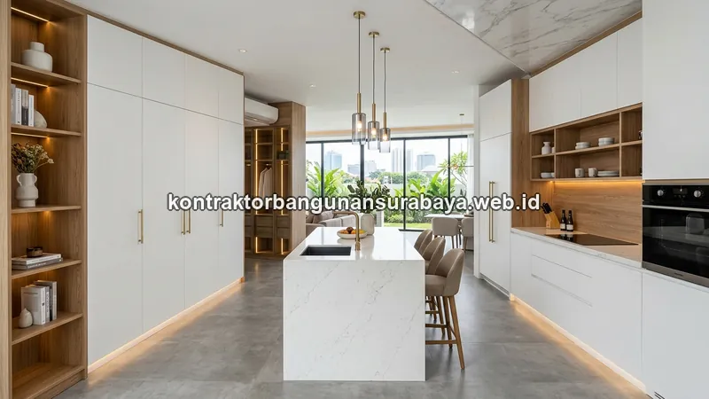

1. Bagaimana Panduan Lengkap Memilih Interior dan Finishing Rumah Modern?
Memilih interior dan finishing rumah modern melibatkan penentuan konsep gaya, pemilihan material lantai dan dinding, hingga pengerjaan furnitur custom seperti kitchen set dan wardrobe. Panduan dari kontraktorbangunansurabaya.web.id ini membahas tahapan tersebut secara berurutan agar hasil akhir rumah selaras antara desain arsitektur dan interior, bukan dikerjakan terpisah tanpa perencanaan yang menyatu.
Bagi pemilik rumah di Surabaya yang sedang merencanakan proyek bangun rumah baru maupun renovasi hunian, interior dan finishing bukan sekadar pelengkap setelah bangunan berdiri. Interior yang direncanakan dengan matang akan meningkatkan kenyamanan hunian, nilai estetika, dan bahkan nilai jual properti di masa depan. Sebaliknya, interior yang dikerjakan tanpa perencanaan sering kali menghasilkan ruangan yang terasa sempit, tidak fungsional, atau tidak sesuai dengan gaya hidup penghuninya.
Mengapa Interior Harus Terpadu dengan Arsitektur?
Interior yang direncanakan terpisah dari desain arsitektur sering kali menghadapi kendala seperti titik listrik yang tidak sesuai, jalur pipa yang menghalangi furnitur, atau bukaan jendela yang tidak optimal. Dengan perencanaan terpadu, seluruh elemen rumah dapat dirancang selaras sejak awal.
2. Menentukan Konsep dan Gaya Interior Sejak Tahap Desain Rumah
Konsep interior idealnya sudah dipikirkan sejak tahap desain arsitektur, bukan setelah rumah selesai dibangun, karena penempatan titik listrik, jalur pipa, dan bukaan jendela akan sangat memengaruhi bagaimana furnitur dan elemen interior nantinya dapat ditata. Anda dapat menyelaraskannya melalui tahap desain arsitektur dan RAB detail sebelum proses pembangunan fisik dimulai.
Gaya minimalis modern saat ini masih menjadi pilihan populer karena perawatannya yang relatif mudah dan biayanya yang lebih terkendali dibanding gaya klasik dengan banyak detail ornamen, namun pemilihan gaya tetap sebaiknya disesuaikan dengan karakter dan kebutuhan penghuni rumah, bukan sekadar mengikuti tren.
Palet Warna Konsisten
Pemilihan palet warna yang konsisten antara dinding, lantai, dan furnitur membantu menciptakan kesan ruang yang lebih menyatu, misalnya menggunakan warna netral sebagai dasar dan warna aksen pada satu atau dua elemen saja agar ruangan tidak terlihat ramai berlebihan.
Pencahayaan Alami
Pencahayaan alami juga menjadi bagian dari konsep interior yang sering diabaikan, padahal jendela dan bukaan yang tepat dapat mengurangi kebutuhan lampu di siang hari sekaligus membuat ruangan terasa lebih hidup, sehingga perencanaan posisi jendela sebaiknya mempertimbangkan tata letak furnitur yang akan ditempatkan di kemudian hari.
3. Pemilihan Material Panel Dinding WPC dan Finishing Duco
Panel dinding Wood Plastic Composite (WPC) menjadi salah satu alternatif populer pengganti kayu solid untuk aplikasi TV, backdrop ruang tamu, atau partisi ruangan, karena lebih tahan terhadap kelembapan dan rayap dibanding kayu asli, sekaligus menawarkan variasi motif serat kayu yang cukup realistis.
Finishing duco pada kusen, pintu, atau furnitur kayu memberikan hasil akhir yang halus dan rata warna, cocok untuk gaya modern minimalis, meski membutuhkan proses pengerjaan berlapis mulai dari dempul, amplas, hingga pengecatan akhir yang membutuhkan ketelitian agar hasilnya tidak bergelombang.
| Jenis Material | Keunggulan | Cocok Untuk Area |
|---|---|---|
| Panel WPC | Tahan lembap, anti rayap, motif serat kayu realistis | Backdrop TV, partisi, dinding kamar mandi |
| Finishing Duco | Permukaan halus, rata warna, kesan modern | Kusen, pintu, furnitur built-in |
| Kayu Solid | Kesan alami, kokoh, tahan lama | Furnitur utama, railing tangga |
| Multipleks / MDF | Harga terjangkau, mudah dibentuk | Kitchen set, wardrobe, rak |
| Kombinasi Kayu + Besi Hollow | Kesan hangat & kontemporer | Rak pajangan terbuka, railing tangga |
Pemilihan antara material solid, panel olahan seperti multipleks atau MDF, dan panel komposit seperti WPC sebaiknya mempertimbangkan fungsi ruang dan tingkat kelembapan area tersebut, misalnya area dapur dan kamar mandi yang lebih rentan kelembapan sebaiknya menggunakan material yang lebih tahan air dibanding area ruang tamu yang relatif kering.
Kombinasi Material Alami & Modern
Kombinasi material alami seperti kayu dengan material modern seperti besi hollow atau kaca juga banyak diminati untuk menciptakan kesan hangat namun tetap kontemporer, misalnya pada rak pajangan terbuka atau railing tangga yang menjadi salah satu focal point ruangan.
4. Perencanaan Furnitur Custom Terpadu
Furnitur custom seperti kitchen set, wardrobe, dan partisi built-in memberikan hasil yang lebih optimal dari sisi pemanfaatan ruang dibanding furnitur jadi, karena ukurannya dapat disesuaikan persis dengan dimensi ruangan yang tersedia, termasuk menyiasati sudut atau area yang tidak beraturan.

Contoh Furnitur Custom
- Kitchen Set: Kabinet atas & bawah, meja kompor, sink
- Wardrobe: Lemari pakaian built-in dengan lampu internal
- Partisi Built-in: Pembatas ruang dengan rak penyimpanan
- Meja TV & Backdrop: Panel WPC dengan pencahayaan LED
Persiapan Jalur Listrik & Air
- Lampu LED di dalam lemari wardrobe
- Titik air & drainase untuk kitchen set
- Stop kontak tersembunyi untuk peralatan dapur
- Jalur kabel untuk lampu backdrop TV
kontraktorbangunansurabaya.web.id membantu merencanakan kebutuhan interior custom sejak tahap akhir konstruksi, sehingga jalur listrik dan titik air untuk kebutuhan seperti lampu di dalam lemari atau keran di area kitchen set sudah dipersiapkan lebih dahulu, bukan ditambahkan belakangan yang berisiko merusak finishing yang sudah jadi.
Pemilihan Vendor Finishing Berpengalaman
Pemilihan vendor atau tukang finishing yang berpengalaman menangani material tertentu, misalnya duco atau HPL, juga memengaruhi hasil akhir secara signifikan, karena teknik pengerjaan yang kurang tepat dapat membuat permukaan finishing terlihat bergelombang atau warnanya tidak rata meski material yang digunakan sudah berkualitas baik.
Untuk gambaran biaya sebelum menentukan spesifikasi interior, simak juga panduan mengenai harga jasa interior per m² agar anggaran interior rumah Anda dapat direncanakan lebih matang.
5. FAQ Seputar Interior & Finishing Rumah Modern di Surabaya
6. Konsultasikan Rencana Interior Rumah Anda di Surabaya
Ingin mewujudkan interior rumah modern yang selaras dengan desain arsitektur dan fungsional untuk keluarga Anda? Diskusikan konsep interior, material, dan furnitur custom bersama tim desain interior kami yang berpengalaman di Surabaya.
Konsultasi Gratis & Survei LokasiTim Interior & Finishing Kontraktor Bangunan Surabaya
Divisi Desain Interior & Finishing. Berfokus pada perencanaan interior terpadu, pemilihan material yang tepat, dan pengerjaan furnitur custom berkualitas untuk rumah, ruko, dan kantor di Surabaya dan sekitarnya.